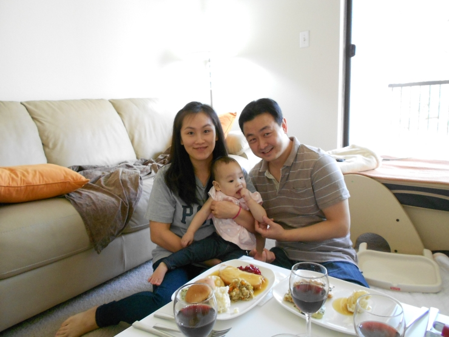

layout: default

	<div class="content">

		<div class="spacer"></div>

		<div class="item">

			<div class="title">Welcome to My WebSite</div>
			<!--  <div class="metadata">Jun 13, 2006 by Vulputate</div>  -->
			
			<div class="body">

				
				<p> I am a postdoctoral research associate in the Julie Ann Wrigley Global Institute of Sustainability at the Arizona State University.    </p>
				<p>In July, 2016, I will enter the job market </p>
				<p><a href="https://sites.google.com/site/youngjoon5"> Update?? Go to my temporary website</a> </p>
					
	            
				
				<p> I was born and brought up in South Korea.
				My major was Political Science and with Economics as minor in college. My master's thesis was about rational choice in voting behaviors.
				In 2015, I obtained my Ph.d in Public Policy and Political Economy 
				at the University of Texas at Dallas. I analyzed bank failures, resilient banking system, and sluggish recovery with agent-based network modeling in my dissertation.</p> 
				
				<p> After graduation from my Master's program, I worked in the National Assembly of Korea for more than 7 years
				in the office of Congressman Maeng, Hyung-Kyu and Park, Jong-Hee resposible for preparing bills and public hearings.	
				Furthermore, I worked extensively in campaign teams in major elections in South Korea, including Presidential election in 2007,
				Seoul Mayoral election in 2006 and General election in 2004. </p>
				
				
				
                <p></p>
				<p></p>
				
				
				<p>I can be reached at : </p>
				<p><a href="mailto:youngjoon5@gmail.com">youngjoon5@gmail.com</a></p>

			</div>

		</div>
		
		
		<div class="divider"><span></span></div>

		
	</div>
		
	
